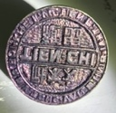

Phan Ngô gia phả
Phả đồ
Cha Mẹ
| Cha | Ngày sinh | Mẹ | Ngày sinh |
|---|---|---|---|
 12.1 Giáo thụ phủ Quảng Oai Phan Đức Mậu 12.1 Giáo thụ phủ Quảng Oai Phan Đức Mậu |
1858-06-29 |  (chánh thất) Đào Thị Đề (chánh thất) Đào Thị Đề |
Vợ/Chồng
| Vợ/Chồng | Ngày sinh | Con cái |
|---|---|---|
| Nguyễn Thị Tý |
1900 | Phan Thị BáPhan Ðại ThànhPhan Kế HùngPhan Kế TrầnPhan Quốc ThếPhan Quốc Chính |
| Vũ Thị Cúc |
1916 | Phan Thị Bích ThủyPhan Thị HưngPhan Thị Kim LiênPhan Quốc Hội |
Sự kiện cá nhân
| Loại Sự kiện | Ngày | Địa điểm | Mô tả |
|---|---|---|---|
 Sinh Sinh |
1902 | ||
| Hôn nhân |
1925 | ||
| Hôn nhân |
1935 | ||
| Ngày mất (AL) |
1956-03-08 | ||
| Mất |
1956-03-08 |
Đặc tả
| Đặc điểm sinh học | Mô tả |
|---|---|
| Quê quán | Tống Văn, Vũ Chính, Thái Bình |
Ghi chú
| New notes on 2025- for research |
Hình ảnh/Video/Audio
Hình ảnh

Ấn Tiên chỉ của cụ Khoát